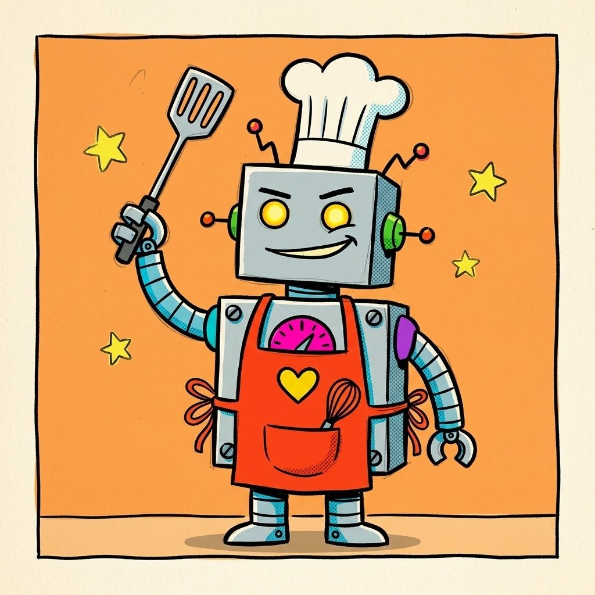
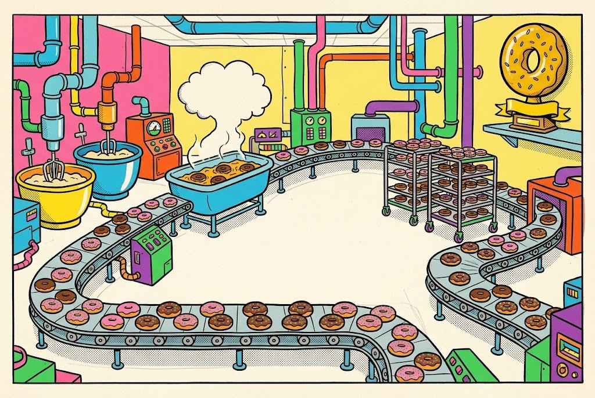

An AI image tool made these two pictures. They look good at first. Look again: the tool slipped up. Find one thing that would be hard to build, hard to move, or hard to draw again from another side.
I notice… Name one thing you can point to.
It may be a problem because… Say why it would not work.
I would change… Choose one exact fix.
Spot the AI slips
Robot Chef

Look at the claws, the tools, the arm joints, the apron ties and the body panels. Which one would be hardest to make work, or to draw the same way twice?
One thing you can point to in the picture.
Why would it not work, or be hard to draw again?
One exact fix. Only one.
Spot the AI slips
Doughnut Factory

Trace the conveyor belt and the pipes with your finger. What does each machine do? Where do the doughnuts start, and where do they end up?
One thing you can point to in the picture.
Why would it not work, or be hard to draw again?
One exact fix. Only one.
Change one thing
A slip is not a disaster. You fix one thing, then look again. In step 4 you do the same with your own picture: find one thing that went wrong, and change the words that caused it.